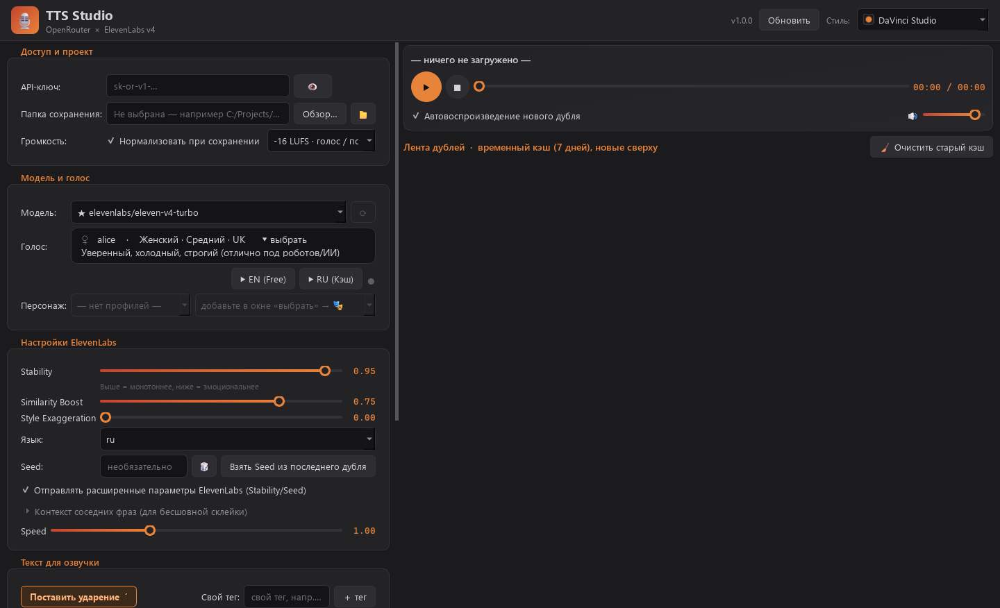
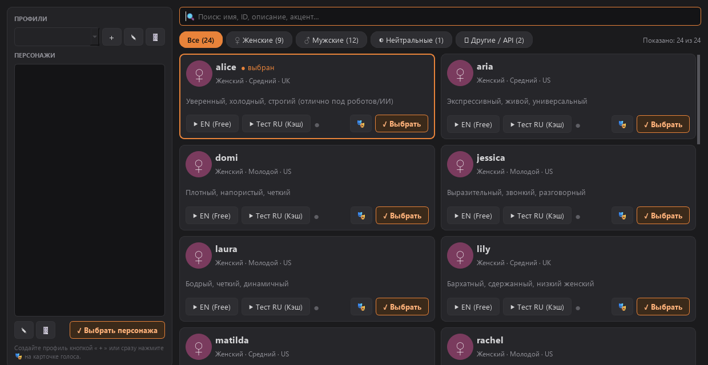
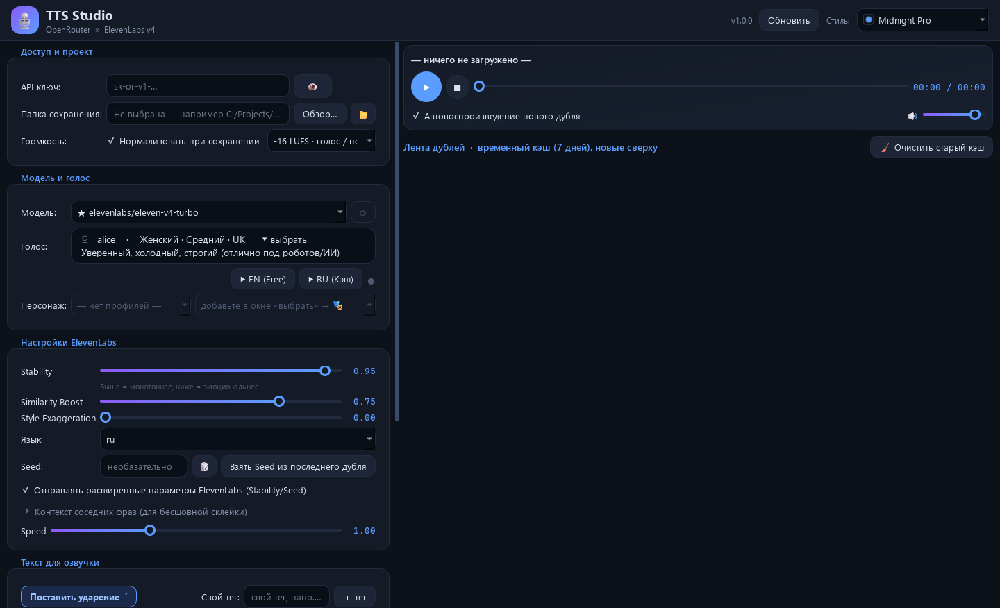
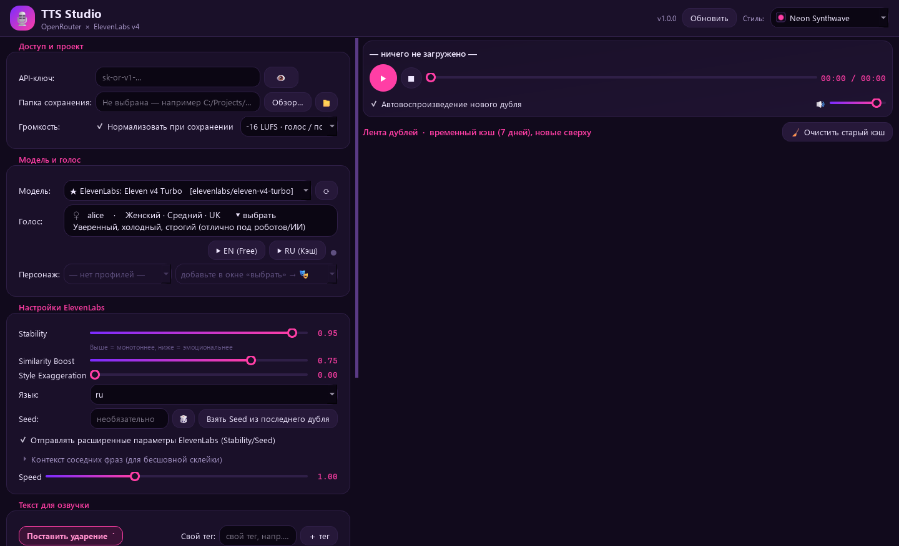
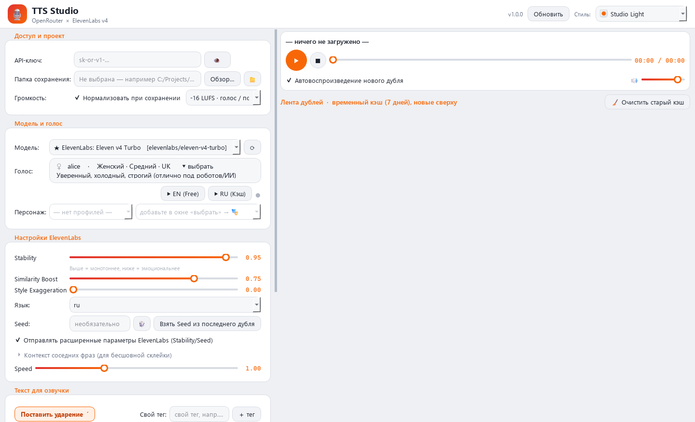

Windows · OpenRouter × ElevenLabs v4
Пишите реплику, слушайте дубли, подбирайте голос персонажу и перетаскивайте готовый файл прямо на таймлайн DaVinci Resolve.

Каждая генерация сохраняется с её настройками: можно переслушать, вернуть текст в редактор и повторить seed. Кэш чистится сам через 7 дней.
Сохранённый дубль перетаскивается мышью в DaVinci Resolve или другую программу, без поиска файла в папках.
Нормализация к LUFS при сохранении, с мягким лимитером пиков. Оригинал в кэше не меняется.
Ударение ставится одной кнопкой, эмоции — тегами вроде [whispering] и [sighs]. Можно добавить свои.
Передайте соседние фразы как контекст, и реплики будут лучше звучать вместе. Stability, Similarity, Style и Speed настраиваются ползунками.
От DaVinci Studio до Neon Synthwave. Тема меняется сразу, перезапуск не нужен.
Каталог с фильтрами по полу и поиском по описанию. Английский сэмпл бесплатный, русский генерируется один раз и остаётся в кэше. Собирайте персонажей в профили проектов: выбрали персонажа — вернулись его голос и настройки.

Нажмите «Обновить» в программе, и она заменит себя новой версией и перезапустится. Браузер и установщик не нужны. Настройки, API-ключ, дубли и текст в редакторе остаются на месте.



Положите TTS-Studio.exe в отдельную папку: рядом с ним появятся настройки и кэш.
Нужен API-ключ OpenRouter. Генерация оплачивается там же, по тарифам выбранной модели.
Выберите голос, напишите текст и нажмите Ctrl + Enter.
Если Windows покажет предупреждение SmartScreen: программа пока не подписана сертификатом. Нажмите «Подробнее», затем «Выполнить в любом случае». Исходный код открыт, а сборка выполняется на GitHub Actions.
Где хранится ключ: в файле config.json рядом с программой, в открытом виде. Не передавайте этот файл другим людям. На сервер ключ отправляется только в OpenRouter.